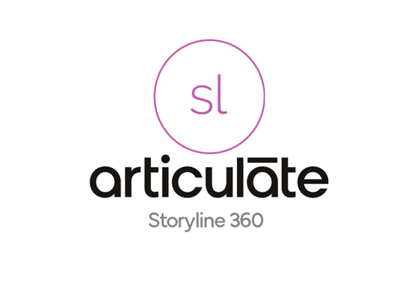

CEIT225 Instructional Design
This course explores the fundamental principles of instructional design, equipping students with the skills needed to develop effective and efficient instructional materials. Through hands-on projects, students will engage in needs assessment, instructional analysis, material development, and evaluation, following a systematic instructional design process.
- Theories and models of instructional design, including ADDIE.
- Needs assessment, instructional analysis, and learner/context analysis.
- Writing performance objectives and designing assessment instruments.
- Developing instructional strategies and selecting appropriate materials.
- Sequencing instruction, designing instructional events, and conducting evaluations.
- Applying technology tools like ARTICULATE and CANVA for instructional material design.
Course Objectives
Learning Materials
Resources
- Instructional Design Basics - Linledin Learning
- ADDIE Model in 5 Minutes - Capterra
- Instructional Design
📍 Beginner
Roadmaps
Skills to Learn
- Understanding basic instructional design models (e.g., ADDIE).
- Identifying instructional needs and writing simple objectives.
- Designing instructional sequences and assessment tools.
- Developing instructional strategies for diverse learning needs.
- Implementing cutting-edge instructional technologies.
- Conducting advanced evaluations and data-driven instructional refinements.